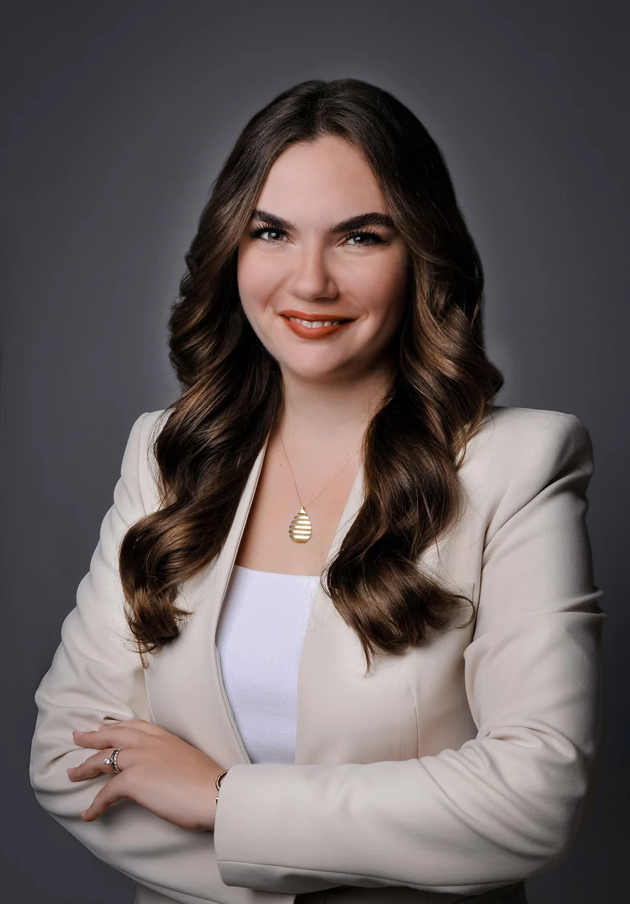
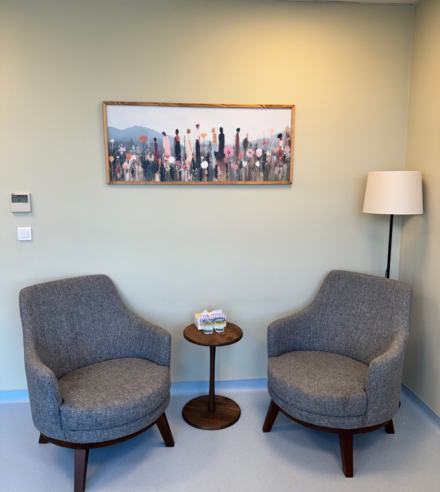
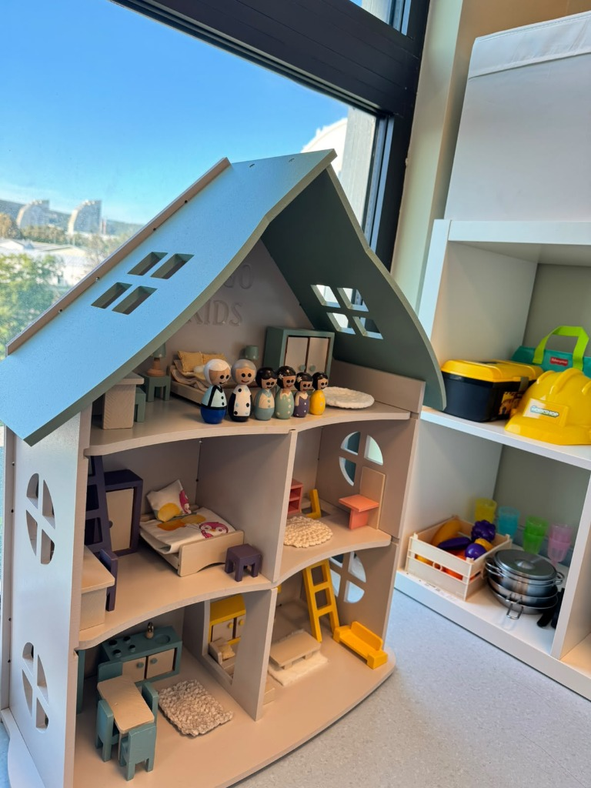

Kendinize veçocuğunuzagüvenli bir alan.
Bazen çocuğunuzun iç dünyasını anlamak, bazen kendinizle ve ailenizle yeniden bağ kurmak için… Kanıta dayalı Bilişsel Davranışçı Terapi ve Oyun Terapisi yaklaşımlarıyla, şefkatli ve bilimsel bir rehberlik.

Anlaşılmak için
güvenli bir alan.
Her hikâye dinlenmeyi,
her duygu anlaşılmayı
hak eder.
Bir şeyleri hemen çözmeniz ya da nasıl anlatacağınızı bilmeniz gerekmez. Başlangıç, çocuğunuz ve kendiniz için güvenli bir alan açmaktır.
Çalışma alanlarını inceleyinHer ihtiyaca,
kendine özel bir alan.
Hangi çalışmanın size uygun olduğundan emin değilseniz, bunu ilk görüşmede birlikte netleştirebiliriz.
01Çocuk & ergen terapisi
Çocukların ve gençlerin duygusal, davranışsal ve gelişimsel süreçlerini yaş dönemlerine uygun bilimsel metotlarla ele alırız. Bilişsel Davranışçı Terapi (BDT) ve dikkat/öğrenme müdahaleleriyle çocukların özgüven ve duygu düzenleme becerilerini güçlendiririz.
Bu çalışma hakkında konuşalım02Oyun terapisi
Oyun, çocuğun doğal konuşma dilidir; oyuncaklar ise kelimeleridir. Çocuk Merkezli ve Bilişsel Davranışçı Oyun Terapisi yaklaşımlarıyla, donanımlı oyun odamızda çocuğun iç dünyasını anlamlandırıp duygularını güvenle dışa vurmasını sağlarız.
Bu çalışma hakkında konuşalım03Ebeveyn danışmanlığı
Çocuğunuzu anlamak, gelişim krizlerini yönetmek ve ebeveynlik tutumlarını güçlendirmek için birlikte çalışırız. Süreç boyunca anne-babalarla düzenli değerlendirme görüşmeleri yaparak aile içi iş birliğini temel alırız.
Bu çalışma hakkında konuşalım04Bireysel terapi
Duygularınızı, düşüncelerinizi ve yaşadığınız kaygı, stres veya ilişki güçlüklerini Bilişsel Davranışçı Terapi temelinde ele alırız. Kendinizle ve yaşamınızla ilişkinizi yeniden keşfetmenize alan açarız.
Bu çalışma hakkında konuşalım05Aile terapisi
Aile içindeki iletişimi, sınırları, krizleri ve ortak zorlukları ele alırız. Her aile bireyinin sesinin duyulduğu, karşılıklı anlayış ve empatiye dayalı bir iletişim zemini oluştururuz.
Bu çalışma hakkında konuşalım06Online terapi
İstanbul dışında yaşayan veya ofise gelme imkânı bulunmayan danışanlar için görüntülü görüşmeyle güvenli seanslar. Sürecin online formata uygunluğunu görüşme öncesinde birlikte değerlendiririz.
Bu çalışma hakkında konuşalımSeçmek zorunda değilsiniz. Birlikte konuşarak başlayabiliriz. ↗

güvenli bir alan.
Merhaba,
ben İlayda Gürkan.
Uzman Klinik Psikolog
İlayda Gürkan
Uzman Klinik Psikolog İlayda Gürkan, çocuk, ergen ve yetişkinlerle psikoterapi çalışmalarını sürdürmektedir. Danışanlarının ihtiyaçlarını ve yaşam koşullarını gözeten, iş birliğine dayalı bir yaklaşım benimser. Görüşmelerini İstanbul’un Kartal ilçesindeki ofisinde yüz yüze ve online olarak gerçekleştirir.
Biruni Üniversitesi Rehberlik ve Psikolojik Danışmanlık lisans eğitiminin ardından Klinik Psikoloji yüksek lisansını tamamlamıştır. Psikoterapi çalışmalarında Bilişsel Davranışçı Terapi yaklaşımını temel alır. EABCT onaylı Bilişsel Davranışçı Terapi eğitimini tamamlamış ve Bilişsel Davranışçı Psikoterapiler Derneği üyesidir.
Çocuklarla yürüttüğü çalışmalarda Bilişsel Davranışçı Oyun Terapisi ve Çocuk Merkezli Oyun Terapisi yaklaşımlarından yararlanır. Dikkat eksikliğiyle ilgili başvurular da çalışma alanları arasındadır. Yüksek lisans çalışmasını özgül öğrenme güçlüğü üzerine yapmış; Disleksi Eğitici Eğitimi’ne katılmış ve Todi Cognit Bilişsel Müdahale Programı uygulayıcısı olmuştur. Çocuk ve ergenlerle yürütülen süreçlerde ebeveynlerle düzenli görüşmeler yaparak aileyle iş birliği içinde çalışmaktadır.
Sertifikalar ve Eğitimler
- Bilişsel Davranışçı Terapi Eğitimi — Bilişsel Davranışçı Psikoterapiler Derneği (BDPD)
- Oyun Terapisi Uygulayıcı Eğitimi
- Aile Danışmanlığı Eğitimi
- Saha Çalışanlarına Yönelik Süpervizyon Programı — Herkes İçin Ruh Sağlığı Derneği
- Çocuklarda Projektif Testler ve Süpervizyon Eğitimi
- Çocuk ve Ergenlerde Bilişsel Davranışçı Terapi
- Denver II Gelişimsel Tarama Testi — Gelişimsel Çocuk Nörolojisi Derneği
- MOXO Dikkat Performans Testi Uygulayıcı Sertifikası — MOXO Türkiye
- Disleksi Eğitici Eğitimi — Disleksi Öğrenme Güçlüğü Derneği
- Todi Cognit Bilişsel Müdahale Programı — Disleksi Öğrenme Güçlüğü Derneği
- ATTENTIONER – DEHB Uygulayıcı Eğitimi — APAMER Aktüel Psikolojik Araştırmalar Merkezi
- Çocuk Değerlendirme Testleri Uygulayıcı Eğitimi
Kartal Ofisimiz &
Terapi Ortamı
Kartal AND Pastel'de yetişkinler için huzurlu ve güvenli bireysel terapi alanı; çocuklar ve ergenler için donanımlı oyun terapisi ve gelişim ortamı.


Bir dakika.
Sadece kendiniz için.
Bir an durun. Omuzlarınızı serbest bırakın.
Hazır olduğunuzda, dairenin ritmine eşlik edin.
Bu kısa egzersiz terapinin yerini tutmaz. Rahatsızlık hissederseniz durup doğal nefesinize dönün.
Sıkça Sorulan Sorular
Bir başlangıcın öncesinde merak etmek çok doğal. Burada bulamadığınız sorular için bana yazabilirsiniz.
Sorunuzu paylaşınİlk görüşmede ne konuşacağız?
Başvuru nedeninizi, ihtiyaçlarınızı ve beklentilerinizi konuşuruz. Her şeyi tek görüşmede anlatmanız gerekmez; ilk görüşme birbirimizi tanımak ve süreci değerlendirmek için bir başlangıçtır.
Online görüşme nasıl yapılır?
Görüntülü görüşmeyle bir araya geliriz. Kendinizi rahat hissedebileceğiniz, konuşmalarınızın duyulmayacağı bir ortam ve internet bağlantısı gerekir. Online çalışma biçiminin uygunluğunu görüşme öncesinde birlikte değerlendiririz.
Terapi ne kadar devam eder?
Süre herkes için aynı değildir. İhtiyaçlarınız, çalışma hedefleri ve sürecin ilerleyişi doğrultusunda birlikte değerlendirilir.
Çocuğum için hangi çalışma uygun?
Çocuğunuzun yaşını, gelişim dönemini ve başvuru nedenini konuşarak başlarız. Uygun çalışma biçimini ilk değerlendirme doğrultusunda birlikte belirleriz.
Randevu ve ücret bilgisi nasıl alabilirim?
Aşağıdaki formdan randevu veya bilgi talebi oluşturabilir, doğrudan e-posta da gönderebilirsiniz. Görüşme biçimi, uygun zamanlar ve seans ücretleri için iletişime geçebilirsiniz.
İletişim & Randevu
Bir randevu talebi, çocuğunuz için bir danışmanlık ya da nereden başlayacağınızı bilmediğiniz bir an… İletişime geçerek başlayabilirsiniz.
ilayda.akyil@gmail.com0542 594 19 43WhatsApp: 0542 594 19 43@psikolog.ilaydagurkanM4 Kartal / Soğanlık Metrosu ve Anadolu Adliyesi aksına yakın. AND Pastel sitesi bünyesinde kapalı/açık misafir otoparkı mevcuttur.
Tanışalım.
Aşağıdaki bilgilerle bir randevu ve ön bilgi talebi hazırlayın.